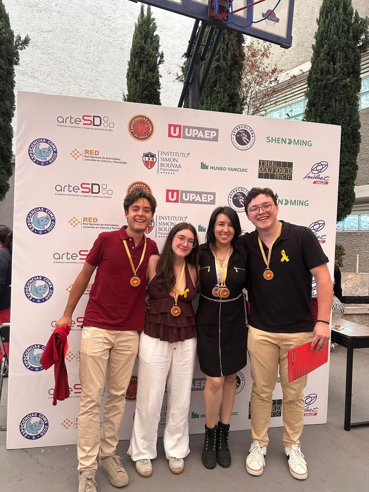

Una barrera de abstraccion
Cuando el movimiento parabolico aparece solo en pizarrones y diagramas, conceptos como velocidad, aceleracion, gravedad y alcance pueden sentirse lejanos.
Una herramienta educativa que combina experimentos reales, fisica e inteligencia artificial para que el movimiento parabolico deje de ser una formula abstracta y se convierta en una experiencia visible.
Miles de estudiantes memorizan ecuaciones sin tener una oportunidad clara de ver, medir y discutir el movimiento que esas ecuaciones describen.
Cuando el movimiento parabolico aparece solo en pizarrones y diagramas, conceptos como velocidad, aceleracion, gravedad y alcance pueden sentirse lejanos.
El proyecto busca que el estudiante observe un lanzamiento real, vea los datos y conecte la evidencia con el modelo fisico.
KLPMotionAI no reemplaza la ensenanza tradicional: la complementa con una experiencia visual donde la IA, el modelo fisico y los datos reales funcionan como herramientas para comprender.
El estudiante observa o realiza un tiro con una pelota visible para la camara.
El sistema detecta posiciones, calibra escala y convierte pixeles a metros.
La IA estima posiciones y permite contrastarlas con la fisica clasica.
La trayectoria deja de ser una formula aislada y se vuelve una evidencia observable.
Esta visualizacion es educativa: muestra el comportamiento esperado del modelo fisico y una curva IA ilustrativa. La IA real del proyecto se explica en la seccion tecnica.
Abre esta demo con el servidor local para usar el modelo real.
Asi funciona nuestro modelo: medimos el lanzamiento, estimamos sus condiciones iniciales, normalizamos las variables y usamos una red neuronal interpretable para predecir puntos de la trayectoria.
El proyecto ya cuenta con resultados competitivos, presencia editorial y datos de aula que muestran mejor recepcion educativa cuando se usa la herramienta.
Primer lugar en Expociencias CDMX 2026, mejor promedio del evento y lugar en la revista "Las 100 mentes mas brillantes de Mexico", producida por la Agencia Nacional Especial de Ciencia y Tecnologia.
Satisfaccion promedio en primera ronda para los grupos que trabajaron con IA, frente a 64.2/100 en grupos con clase tradicional.
Mayor proporcion de estudiantes con intencion de seguir aprendiendo ciencia en primera ronda: 35.7% con IA contra 27.1% en clase tradicional.
El patrocinio permite representar a Mexico en la fase internacional de Expociencias y presentar una propuesta que acerca la fisica, la inteligencia artificial y la experimentacion a mas estudiantes.

Karim Carte Granillo, Luciana Garcia de Quevedo Besserer y Patricio Moran Avalos, bajo la asesoria de Montserrat Zaragoza Ojeda.